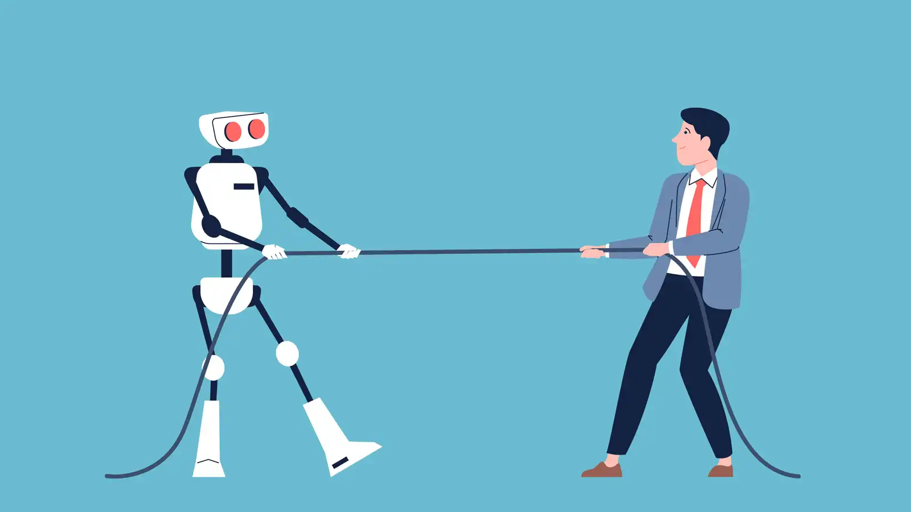

Yapay Zeka
Google, Yeni Yapay Zeka Modelini Duyurdu
Google'ın Gemini 2.5 Flash'ı nihayet erişime açıldı: Üstelik hiç olmadığı kadar hızlı!
Haberi Oku
Yayınlanma Tarihi: 14 Nisan 2025
Yayınlayan Kişi: Bora Şenel 232211057
Yapay zekanın iş dünyasındaki etkileri her geçen gün büyüyor. Önümüzdeki 10 yıl içinde birçok mesleğin dönüşmesi bekleniyor.
Yapay zeka (AI), artık yalnızca teknoloji sektörünü değil; sağlık, finans, hukuk, eğitim gibi pek çok farklı sektörü de temelden değiştirmeye başladı. Uzmanlara göre, özellikle rutin ve tekrarlayan işler yapay zeka algoritmaları tarafından daha verimli bir şekilde gerçekleştirilecek.
Özellikle büyük veri analizi, müşteri hizmetleri, üretim hatları ve hatta kreatif sektörler bile yapay zekanın etkisi altına girmeye başladı. Bazı raporlar, 2035 yılına kadar iş gücünün %40'ının yapay zeka destekli teknolojilerle doğrudan etkileşimde olacağını öngörüyor.
Bu dönüşüm, bazı işlerin tamamen ortadan kalkmasına neden olurken, aynı zamanda yepyeni meslek alanlarının da doğmasına zemin hazırlayacak. Yapay zeka mühendisliği, veri etik uzmanlığı ve insan-yapay zeka etkileşimi gibi yeni meslekler ön plana çıkacak.
Google'ın Gemini 2.5 Flash'ı nihayet erişime açıldı: Üstelik hiç olmadığı kadar hızlı!
Haberi Oku
Yepyeni özelliklere sahip Nintendo Switch 2 resmî olarak tanıtıldı: İşte özellikleri ve fiyatı!
Haberi Oku
SpaceX CEO'su Elon Musk, Mars’a ilk insanlı uçuşun 2026 yılında gerçekleştirileceğini açıkladı.
Haberi Oku